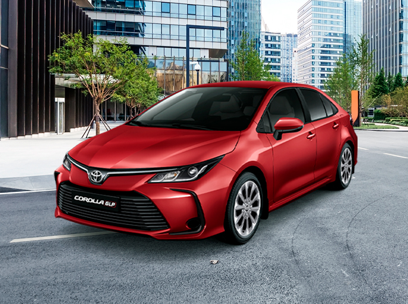

SISTEMA
GLP
ETIOS GNV
AVANZA GNV
YARIS GNV
VENTAJAS
SISTEMA GLP
SISTEMA GNV ETIOS
SISTEMA GNV AVANZA
SISTEMA GNV YARIS
MODELOS
ETIOS GLP
ETIOS GNV
AVANZA GLP
AVANZA GNV
YARIS GLP
YARIS GNV
COROLLA GLP
RUSH GLP
Autos y camionetas TOYOTA A GAS
TALLERES
GLP
GNV
GNV ETIOS
PUNTOS DE VENTA
GLP
GNV
PREGUNTAS FRECUENTES
SISTEMA COROLLA
¿Cómo funciona el Etios GLP? | Autos a gas Toyota Perú
EQUIPAMENTO
Combustible dual (Gas/Gasolina).
Equipo de 5ta generación.
Kit de gas: BRC.
Tanque toroidal (espacio de llanta de repuesto).
Capacidad de tanque de hasta 52 litros.
COMPONENTES DEL SISTEMA
Computadora del gas.
Multi-válvula de cierre electrónico.
Riel de inyectores de alta gama.
Filtro de fase líquida y fase gaseosa.
Electro-válvula.
Vaporizador / Reductor de presión.
CONDICIONES DE LA GARANTÍA
INFORMACIÓN DEL MANTENIMIENTO

Disponible en:
CONOCE EL
ETIOS GLP
CONOCE EL
AVANZA GLP
CONOCE EL
YARIS GLP
CONOCE EL
COROLLA GLP